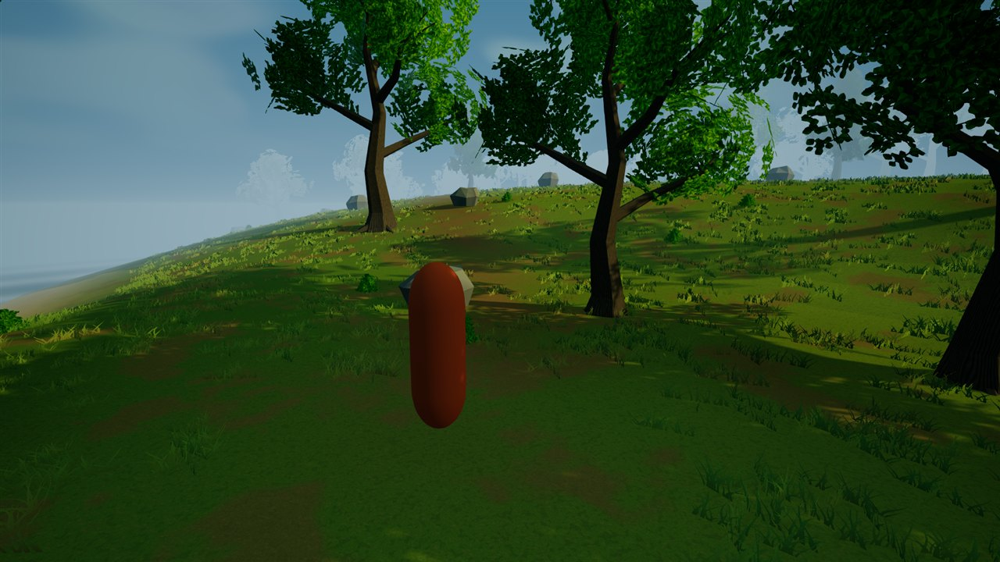

DAY / PLAYABLE VIEW
Through the clearing
The ordinary player camera with the nearby forest and a new visual-only distant landscape.

Before distant landscape coverage
Study 05: the same camera with the earlier short fog boundary. The current view adds coarse visual-only terrain and tree silhouettes; wind can differ.
